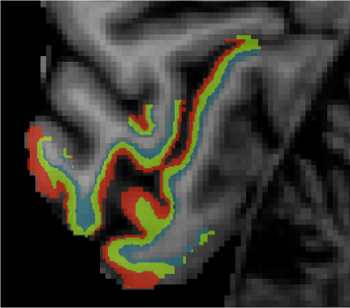
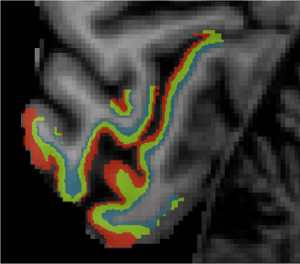
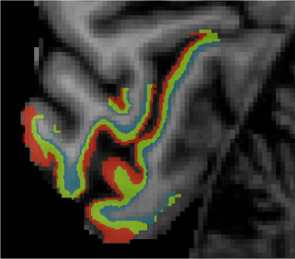

I am a cognitive neuroscientist interested in how we perceive and act in the world.
I am experienced with designing and conducting both functional magnetic resonance imaging (fMRI) and behavioural experiments. I have a strong background in data analysis, machine learning, and computer programming in multiple languages. In addition, I have presented my research both internationally and domestically, and am passionate about transparent, high quality science.

I am currently leading the first layer-specific fMRI study at the University of Melbourne, investigating the origins of sensory uncertainty. I conceived of and designed this experiment, personally acquired a $16,000 grant to fund 7T MRI scanning,personally collected fMRI data from 28 participants, developed a custom pre-processing pipeline and applied a novel machine learning algorithm to the data. I am currently writing up the results of this study for publication.
I am also currently involved in a project investigating the neural basis of fear responses in humans (with Dr Sarah Tashjian), and have previously worked on a series of psychophysical studies investigating the effect of attention on a novel visual illusion called the twinkle goes effect, for my undergraduate honours thesis (with Prof Alex Holcombe).
Holcombe, A. O., & Corbett, J. J. (2023, December 20). Temporal errors: Researchers should stop studying the flash-lag effect. https://doi.org/10.31234/osf.io/swzr7
Download my CV here.
Github / Twitter / Bluesky / Mastodon